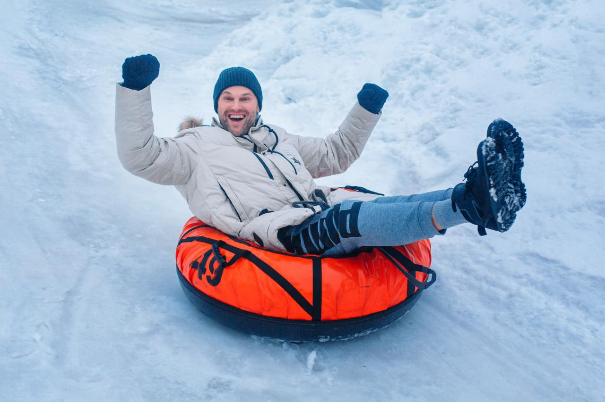
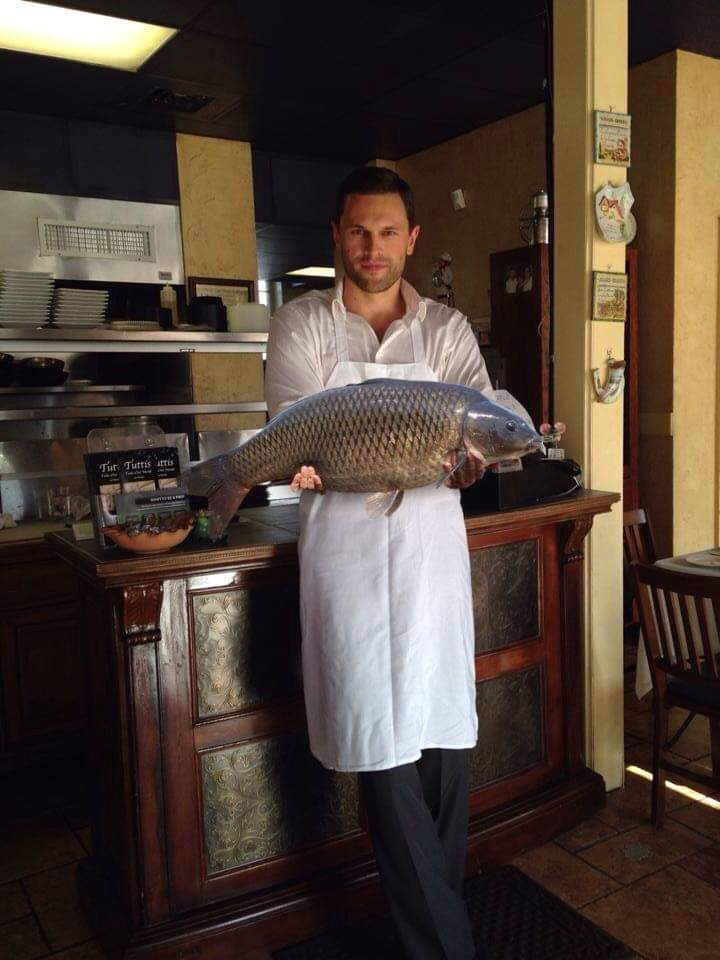

Giedrius Paurys
Amzius.....................................................41 metai
Issilavinimas.............................Aukstasis LKKA
Seimynine padetis.....................................nevedes
Hobis:...........................sportas, keliones, zvejyba
 Idomi istorija:
Pries 9 metus (2012 metu rugpjucio menesi), su draugais suplanavome
automoiliu kelione is Lietuvos i Graikija. Planavom turbut daugiau
nei puse metu. Tai ir marsruto planavimas, ir zymiu vietu aplankymas,
sustojimu bei nakvyniu vietos. Issinuomavom mini autobusiuka ir
sesiese pasileidome i kelione. Buvome mes trys vyrukai vairuotojais,
o musu damos mus palaike moraliskkai :) Per pirma para kirtome net
5 valstybiu sienas (Lenkija, Slovakija, Vengrija, Serbija ir
Makedonija). Makedonijos sostineje Skopjeje praleidome nakti.
Kita diena vaziavome toliau. Po pietu jau pasiekeme Graikija.
Zinoma, aplankeme garsuji Atenu Akropoli, kitas idomias ir l
ankytinas vietas. Aplankeme netgi pati pirma stadiona, kuriame
pries Kristu, vyko Olimpines zaidynes. Po aplankyto Atenu miesto,
kelemes keltu i Zakinto sala, kur apsistojome palapiniu miestelyje.
Sioje saloje yra izymus pliazas, i kuri patekti galima tik nuplaukus
laivu. Tame pliaze yra audros ant kranto ismestas laivas... Dabar
is jo like tik korpusas, kuris kas met yra vis labiau ir labiau.
Si vieta yra turistu labai pamegta, o vadinasi "Shipwreck".
Taigi, sioje saloje praleidome savaite laiko. Pailseje ir pasikrove jegu,
leidomes i kelione namo. Viso sukorem apie 6700 km.